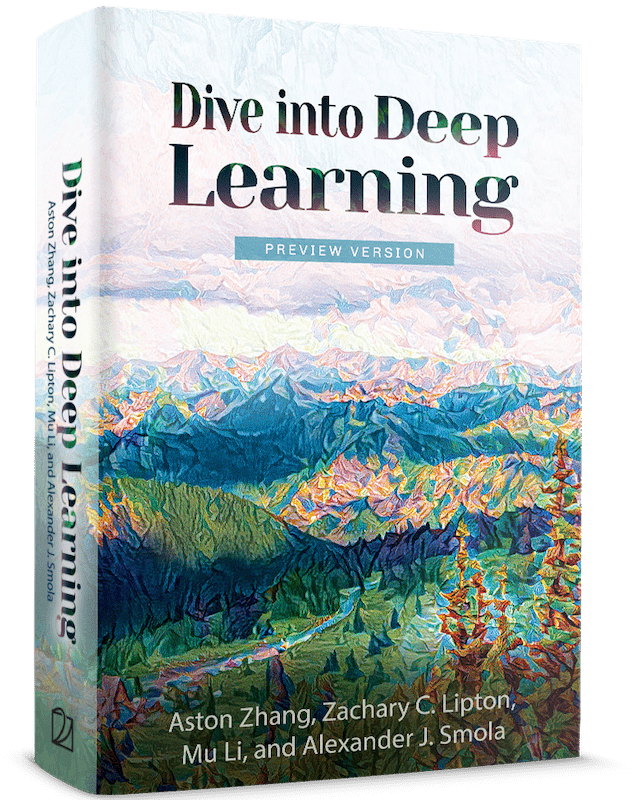

《动手学深度学习》学习手册
把这本可执行、跨框架、数学+代码+讨论一体的开源深度学习教科书，做成一条可走的学习路线：先给全书 23 章的地图，再挑 4 章逐章精讲——每章都配一道例题精讲和一组主动回忆测验，右下角实时记录你的进度与答题。

1 · 这本书是什么 · 适合谁
一句话：一本每节都是一个可运行 Jupyter Notebook 的深度学习教科书——把数学推导、可执行代码、社区讨论放进同一页，被 70 个国家 500+ 所大学采用。
🧮 数学 + 代码 + 讨论一体
每节既讲公式，也给出可直接运行的实现，文末还接社区讨论区。不是「看懂」而是「跑通」。
🔀 四套框架并行
同一本书提供 PyTorch / MXNet / JAX / TensorFlow 四种代码实现，挑你用的那套即可。
🎓 教材级采用
被 Stanford、MIT、Harvard、Cambridge 等 500+ 所大学、70 国用作教材（出处：仓库 README，未标注具体日期）。
💸 完全免费
正文 CC BY-SA 4.0、示例代码改良版 MIT；在线全文 + PDF 均免费，关联 Cambridge University Press。
适合谁 · 需要什么前置
书中自述：只需「适量的线性代数、微积分、概率与 Python 编程」；它「优先讲直觉与想法，而非数学严谨性」，并配了一个数学附录做复习。换句话说——会写 Python、记得一点点矩阵和求导，就能开始。
2 · 全书地图 · 学习路线
23 章不必从头啃到尾。按「打基础 → 学核心架构 → 进序列与注意力 → 落到应用与专题」四段来走，每段标出该先读哪几章。


3 · 线性回归 逐章精讲开始
最简单、也最该先懂的模型：用特征的加权和 + 偏置预测一个连续值。它是理解后面一切的「单神经元」原型。
核心要点（忠于原书）
- 模型是仿射函数：预测 = 各特征的加权和再加偏置。
- 用平方损失衡量好坏，训练就是在数据上最小化平均损失。
- 平方损失下存在罕见的解析解（正规方程），但一般我们用小批量随机梯度下降 (SGD)。
- 平方损失不是随便选的——它等价于「加性高斯噪声」假设下的极大似然估计。

关键公式
把损失写成 ‖y − Xw‖²（把偏置 b 并入 w，对应 X 补一列 1）。求使损失最小的 w。
- 写出目标：最小化 ‖y − Xw‖² = (y−Xw)⊤(y−Xw)。
- 对 w 求梯度：∂w‖y − Xw‖² = 2X⊤(Xw − y)。
- 令梯度为零：X⊤(Xw − y) = 0 ⟹ X⊤Xw = X⊤y。
- 解出：w* = (X⊤X)−1X⊤y。
Q1为什么说平方损失「有统计学道理」，而不是随便选的？
Q2正规方程给出的解析解是？
4 · Softmax 分类
从「预测一个数」跨到「预测哪一类」：用 softmax 把原始分数变成概率分布，用交叉熵当损失。
核心要点
- 分类问题问的是「哪一个」，标签用 one-hot 编码，每个类别一个输出。
- softmax 把 logits 变成非负、和为 1 的概率，同时保持 argmax 不变。
- 交叉熵 = 正确类别的负对数似然，是分类的自然损失。
- softmax + 交叉熵的梯度形式极简：预测概率 − 真实标签。

关键公式
设 logits o = (2, 1, 0)，真实类别是第 0 类（one-hot (1,0,0)）。求 softmax 概率、交叉熵损失、以及对 o 的梯度。
- 取指数：exp(2),exp(1),exp(0) ≈ (7.389, 2.718, 1.000)，和 ≈ 11.107。
- softmax：(7.389, 2.718, 1.000)/11.107 ≈ (0.665, 0.245, 0.090)。
- 交叉熵：只有正确类有贡献，l = −log(0.665) ≈ 0.408。
- 梯度 = softmax − y：(0.665−1, 0.245−0, 0.090−0) = (−0.335, 0.245, 0.090)。
Q1softmax+交叉熵 对某个 logit oj 的梯度等于？
Q2为什么要套一层 softmax，而不直接拿 logits 当输出？
5 · 多层感知机 (MLP)
给网络加上隐藏层和非线性激活——这是从「线性模型」迈向「深度」的第一步，也是关键一步。
核心要点
- 线性模型假设太强（单调/线性），现实问题常常不成立。
- 隐藏层在输入与输出间加入中间表示。
- 没有非线性，多个仿射层会「坍缩」成单个仿射层——白加。
- ReLU / sigmoid / tanh 等激活才让「深度」真正有意义；单隐藏层 MLP 即万能逼近器。

关键公式
两层都不加激活：H = XW(1)+b(1)，O = HW(2)+b(2)。证明它和单个线性层表达力相同。
- 代入：O = (XW(1)+b(1))W(2) + b(2)。
- 展开：O = X(W(1)W(2)) + (b(1)W(2)+b(2))。
- 令 W = W(1)W(2)、b = b(1)W(2)+b(2)，则 O = XW + b。
- 结论：两层线性网络 = 单个线性层，「白忙一场」。插入非线性 σ（式 5.1.3）才打破坍缩。
Q1给一个「纯线性」深网（层与层之间无激活）不断加层，会怎样？
Q2下面哪个恒等式成立？（原书练习 5a）
7 · 卷积神经网络 书第 7 章
专门「看图」的架构。它不是凭空发明的——把平移不变性和局部性两条原则加到全连接层上，自然就推出了卷积。
核心要点
- 全连接层撑不起图像：百万像素接千单元隐藏层 ≈ 109 个参数。
- 平移不变性：图像平移，表示也应随之平移——权重不该依赖绝对位置 ⟹ 权重共享。
- 局部性：一个隐藏单元只看输入的一小块邻域 ⟹ 有界感受野。
- 两条原则一加，参数量直降十个数量级——结果正好就是卷积层；真实图像还要加通道。

关键公式
输入 [[0,1,2],[3,4,5],[6,7,8]]，核 [[0,1],[2,3]]。求输出（步幅 1、无填充）。
- 输出尺寸：(3−2+1)×(3−2+1) = 2×2。
- 左上：0·0+1·1+3·2+4·3 = 19。
- 右上：1·0+2·1+4·2+5·3 = 25。
- 左下：3·0+4·1+6·2+7·3 = 37。
- 右下：4·0+5·1+7·2+8·3 = 43，得 [[19,25],[37,43]]。
Q1卷积层是从全连接层施加哪两条原则「推导」出来的？
Q2上面例题里输出的左上角元素是多少？

8 · 怎么动手跑代码 官方步骤
这本书的精髓是「每节都能跑」。下面是官方安装路径（以 PyTorch 为例），跑通后每一节的 Notebook 都能改了就看效果。
① 建环境 + 装框架 + 装 d2l 包
# 建并激活环境
conda create --name d2l python=3.9 -y
conda activate d2l
# 装 PyTorch（也可换 mxnet / jax / tensorflow）
pip install torch==2.0.0 torchvision==0.15.1
# 装配套 d2l 工具包
pip install d2l==1.0.3② 下载并打开 Notebook
curl https://d2l.ai/d2l-en-1.0.3.zip -o d2l-en.zip
unzip d2l-en.zip && cd pytorch # 另有 mxnet / jax / tensorflow 子目录
jupyter notebook # 浏览器打开 http://localhost:8888- 不想装环境？官方支持 Google Colab / Amazon SageMaker / SageMaker Studio Lab 一键在云端跑。
- 想离线读：下载 PDF（PyTorch 版）。
- 安装详情：d2l.ai/chapter_installation。
9 · 我的学习记录 边学边填
这页本身就是你的学习追踪器：右下角的进度卡会记下你读完几章、测验答对几题（存在浏览器本地）。下面留几个回填位，跑完代码后补上。
✅ 自动追踪（右下角进度卡）
每章末勾「读完」→ 章节进度 +1；每答一道测验 → 正确率更新。关掉页面再打开仍在（localStorage）。
📓 建议的练手顺序
读完一章 → 打开对应 Notebook → 改一个超参（学习率/隐藏单元数/核大小）→ 看曲线变化 → 回这页做测验巩固。
▢ 回填占位（动手后补这里）
- 环境装好截图（conda + d2l 版本）
- 线性回归 Notebook：改学习率后的损失曲线对比
- Softmax / Fashion-MNIST：测试精度截图
- MLP：换激活函数（ReLU↔sigmoid）后的效果差异
- 卷积：在 LeNet 上跑通的准确率与耗时
- 每章「练习题」里挑 1 道写下你的解答
10 · 术语表
本书高频术语速查，输入关键词实时过滤（中/英/释义都可搜）。